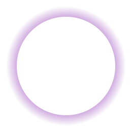
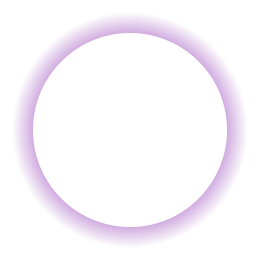

обо мне
Привет! Меня зовут Владлена, и я практикующий таролог с более чем 5 лет опыта в области эзотерики и гадания на картах Таро. Моя цель — помочь вам найти ответы на жизненные вопросы и предоставить ясность в сложных ситуациях. Используя древние знания и интуицию, я интерпретирую значения карт Таро, чтобы предложить вам инсайты и руководство. Запишитесь на консультацию, и вместе мы откроем новые пути к вашим целям и мечтам.

Способность читать карты с высокой степенью точности и интуиции.

Предоставление точных и полезных консультаций клиентам, помогая им принимать важные жизненные решения.

Публикация собственных исследований и наблюдений о Таро, делая знания доступными широкой аудитории.
 
